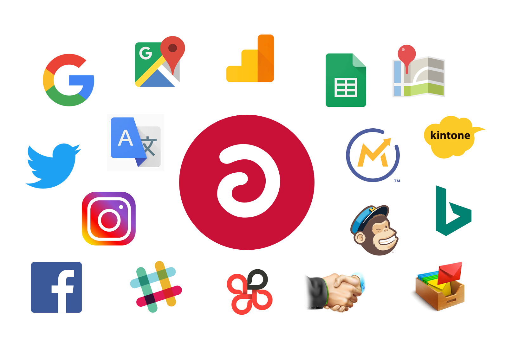
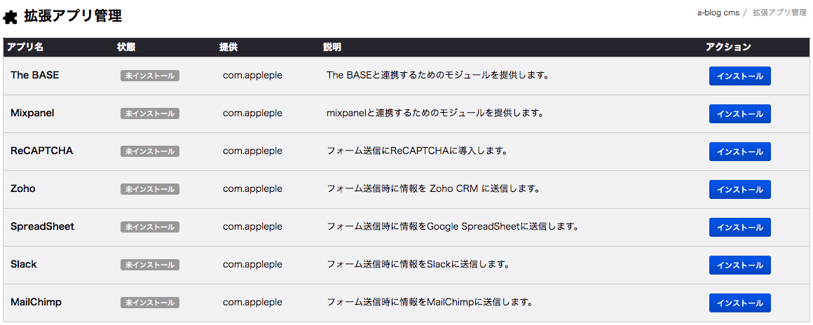
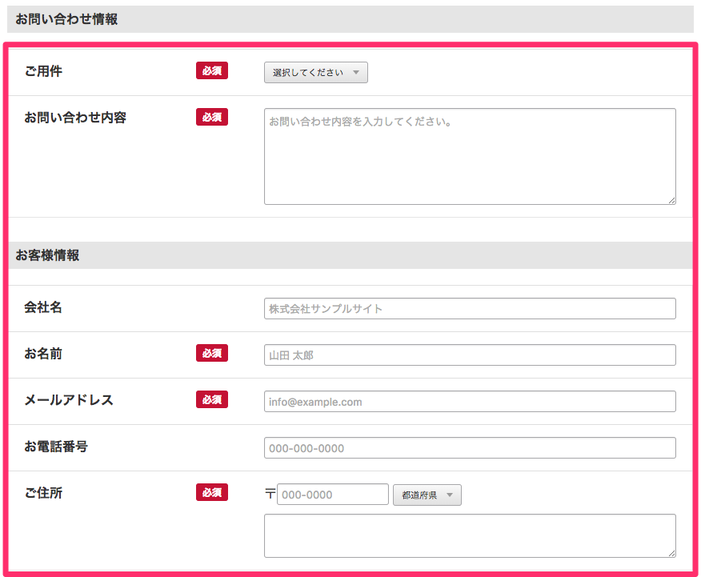
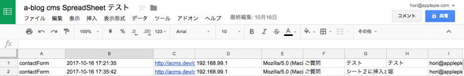
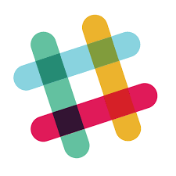
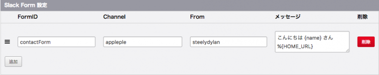
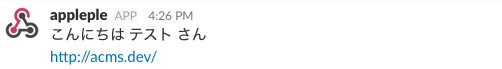
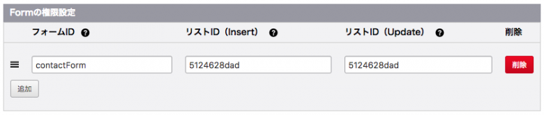
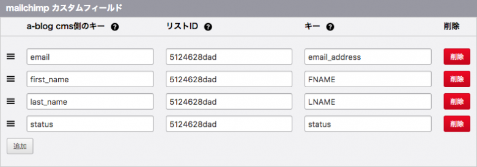

## 2. a-blog cms の拡張アプリとは - a-blog cmsのコアなプログラムをいじらなくても機能を提供できる仕組み - 開発側の人間以外でも気軽にプラグインを作って公開できるように用意された仕組み ## 2. a-blog cms の拡張アプリとは 今後は外部サービスとの連携にもっとこの拡張アプリを使っていけばいいのでは？ ### 次のバージョンでは
以下が新たに追加された拡張アプリです。 - Zoho CRM - SpreadSheet - Slack - MailChimp # Zoho CRM


# SpreadSheet お問い合わせフォームなどから送信された内容をGoogle SpreadSheetに行として追加します。 # SpreadSheet 普段お使いのお問い合わせフォーム等に下のようなコードを入れるだけ！ ```html ``` # SpreadSheet 実行結果
# Slack
# Slack ## 管理ページ - contactFormで送信された内容をメッセージとして、Slackのapplepleチャンネルにsteelydylanとして送信。 - お問い合わせフォームのHTML的なカスタマイズの必要はなし
# Slack 実行結果
# MailChimp お問い合わせフォームなどから送信された内容をMailChimpのリストに追加します。 # MailChimp a-blog cms 拡張アプリ画面 - 各フォームの Insert権限やUpdate権限の設定をします。 - a-blog cms 側のキーに対応するMailChimp側のキーの設定  # MailChimp あとは、カスタマイズなしでお問い合わせフォームの内容をMailChimp側に登録可能